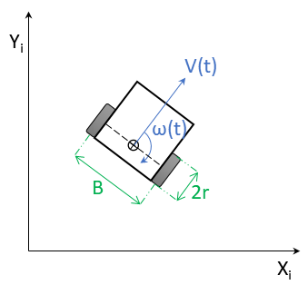

|
Robotic Car Controller 1.0
Library to manage a two wheeled robotic vehicle (Stepper Motors)
|
|
Robotic Car Controller 1.0
Library to manage a two wheeled robotic vehicle (Stepper Motors)
|
Starting with new SmartCar2 chassis and computer hardware, it is a relatively straightforward process to work out the right configuration parameters to get the vehicle set up:
An application using the library needs to pass a few physical constants to the MD_SmartCar2::begin() method that allows the library to configure vehicle control parameters.
Note that the units of length are specified in millimeters. However, alternative units (eg inches or centimeters) may be used AS LONG AS ALL LENGTHS ARE SPECIFIED IN THE SAME UNITS, as the units all cancel out in the calculations.
Two physical constants need to be directly measured from the vehicle:
These two constants are shown as 2r and B in the figure below.

The first part of setup is to use the MotorTest example sketch to ensure that the motors are turning in the correct direction and the encoders are working correctly.
MotorTest allows control of the vehicle motors using the Serial Monitor through the command line interface to invoke test the functions (type ? for help text listing the functions).
Independently commanding the motors to move in a Forward and Reverse direction provides confirmation that they are wired correctly. If they rotate the wrong (opposite) direction, simply reverse pairs of wires (or their I/O pin numbers) between processor I/O pins and the speed controller.
The next step is to use the MotorTest example sketch to test coordinated motion of the motors y invoking the library MD_SmartCar2::drive(), MD_SmartCar2::move() and MD_SmartCar2::spin() methods.
The final phase, using the Control_Test example, is about testing the vehicle 'in real life' as it moves about on the floor. The dynamics in this situation are likely to be different from the previous bench testing previously.
The Control_Test example sketch is paired with the related App Inventor 2 (AI2, see http://ai2.appinventor.mit.edu/) "Control Test" application found in the example sketch folder. The AI2 application provides a GUI front end for commands through a Bluetooth interface. The same commands could be issued from the Serial Monitor (or other Terminal program) connected through a Bluetooth serial port.
The AI2 application has a main menu leading to a displays for controlling drive() and move().